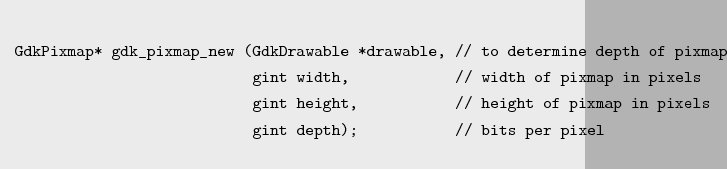
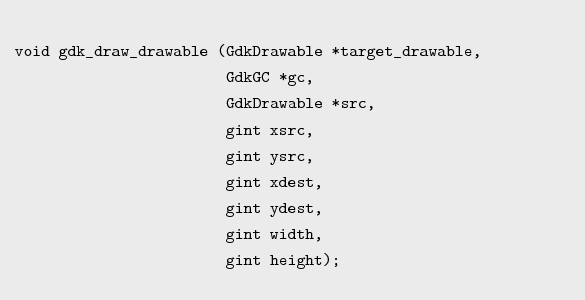
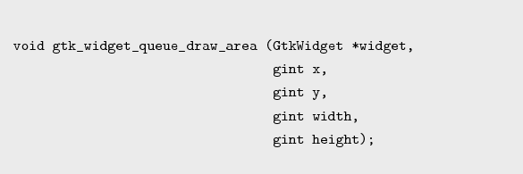

Next: 游戏的结构 Up: Gtk绘图方式 Previous: Gtk绘图方式 Contents
直接在GtkWidget上绘图是简单的，当expose_event事件发生时就有麻烦了，你需要记住绘 制过的所有图形，然后在事件回调函数中重新绘制，这是很讨厌的。解决的办法是将图形绘 制在内存中，但并不显示，当需要显示到屏幕或有expose_event事件发生时，从内存复制相应 的内容到GtkWidget对象中。我们直接操作的对象是GdkPixmap，是GdkDrawable的子 类，GdkPixmap是资源对象。
下面是生成GdkPixmap的方法，drawable参数是对应显示图形的GdkDrawable对象，一般 是GtkWidget对象的GdkWindow对象(widget->window)，显示到屏幕就是把GdkPixmap中的内容 复制到drawable中。depth表示绘图毎一点占位的大小，安全的方式是置成-1，GdkPixmap会 自动设制位的大小。
0.9

1.0
当将GdkPixmap中的内容（图形）显示到屏幕上（GtkDrawingArea的GdkWindow），需要调 用gdk_draw_drawable方法，调用后，会自动将GdkPixmap内容复制到GdkWindow中。 xsrc，ysrc是源（GdkPixmap）的起始坐标，xdest，ydest是目标（GdkWindow）的起始地 址，width，height是复制区域大小，如果要复制整个区域，可以将width或height设成-1。
0.9

1.0
绘图的过程一般是这样的，先将图形绘制到GdkPixmap中，然后调 用gtk_widget_queue_draw_area方法，方法中指定需要重绘的区域，系统会将这个区域 置成invalidate状态，置invalidate状态会触发expose_event，expose_event回调函数参 数中有区域信息，调用gdk_draw_drawable方法，将GdkPixmap中指定区域复制 到GdkWindow的指定位置，图形就显示出来了。方法中的x，y是置成invalidate状态的区域起 始坐标，width，height是区域大小。
如果整个GdkDrawingArea被遮住又重新显示，系统会自动产生expose_event事件，回调函数 参数有区域信息，就是GdkDrawingArea的全部区域。
0.9

1.0